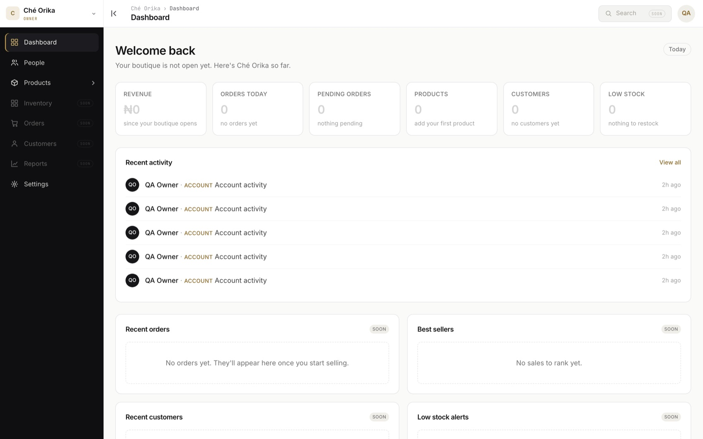
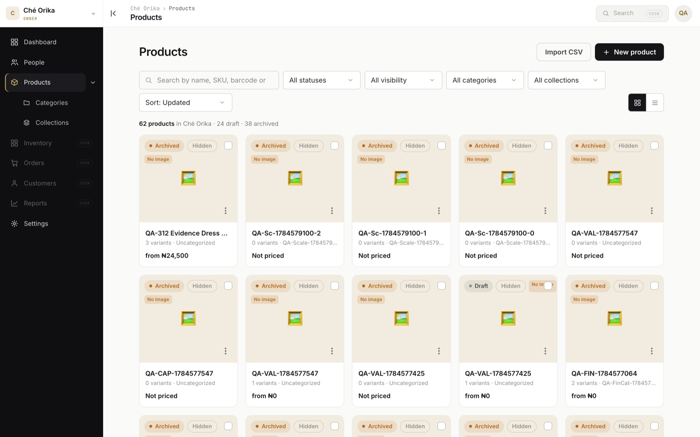
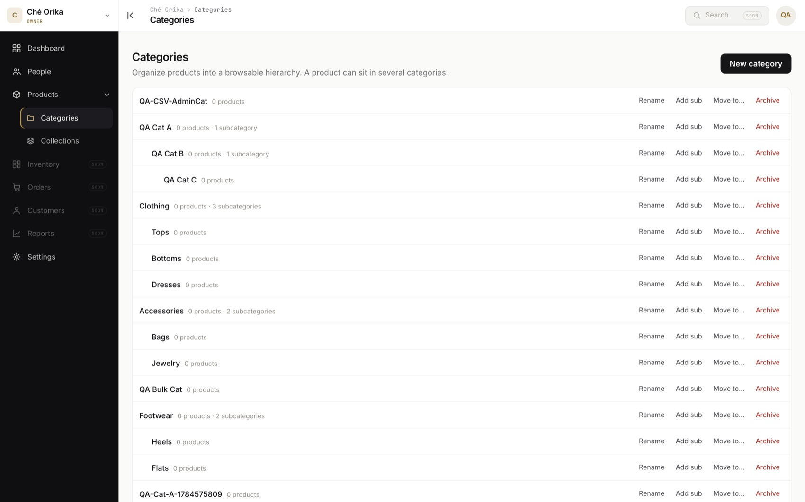
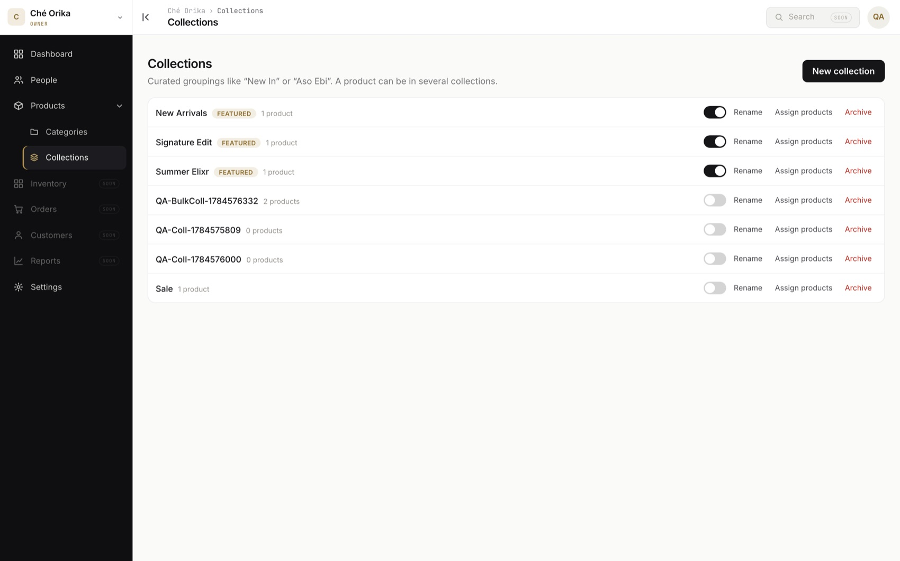
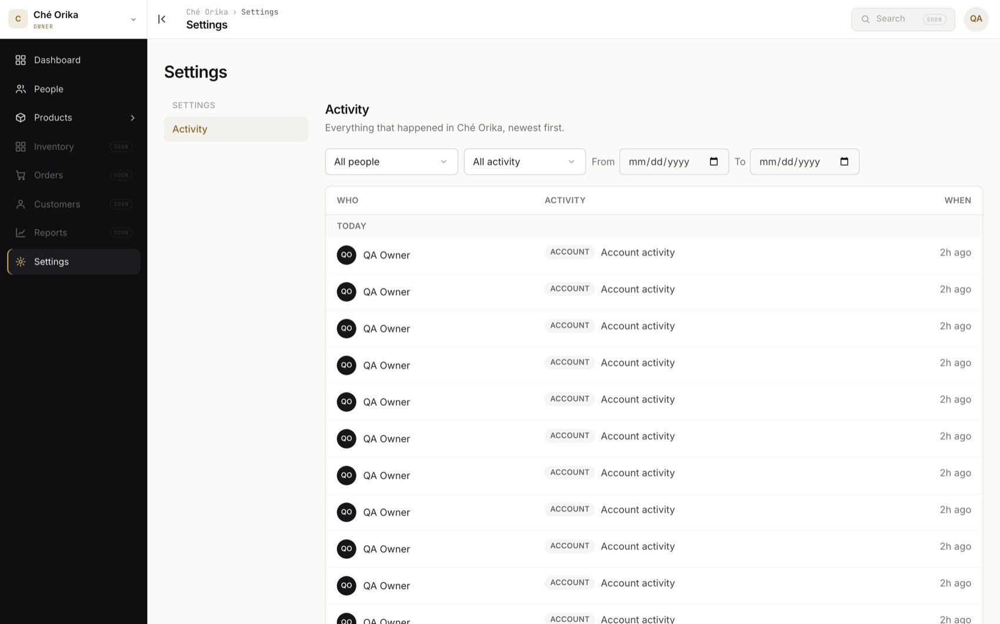
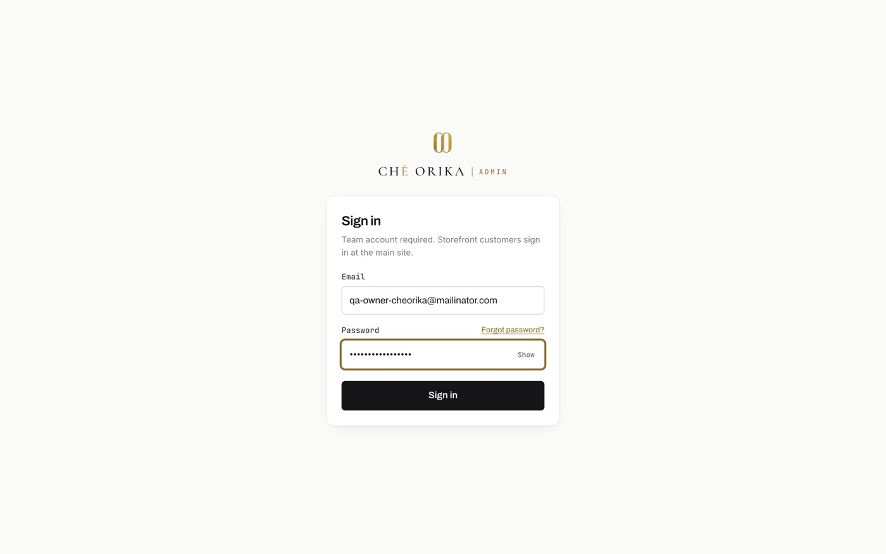
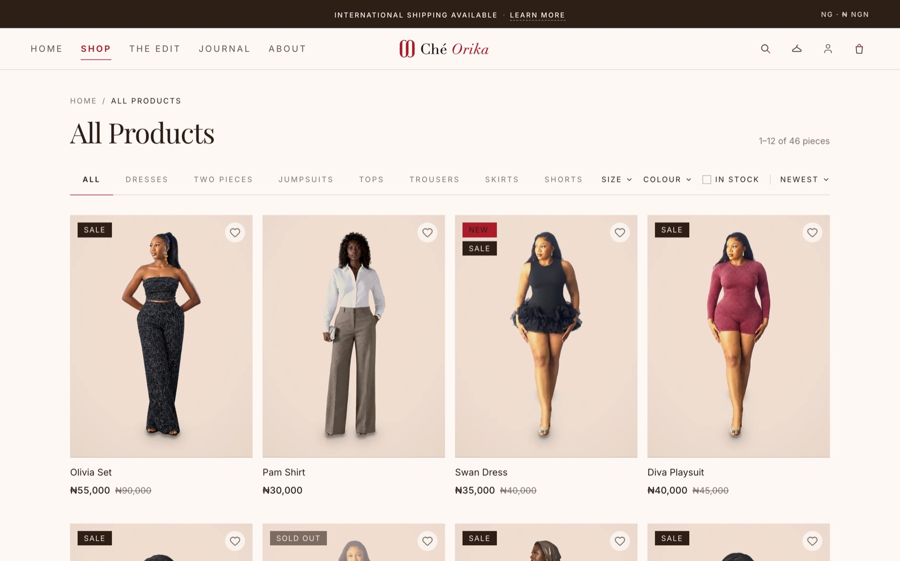
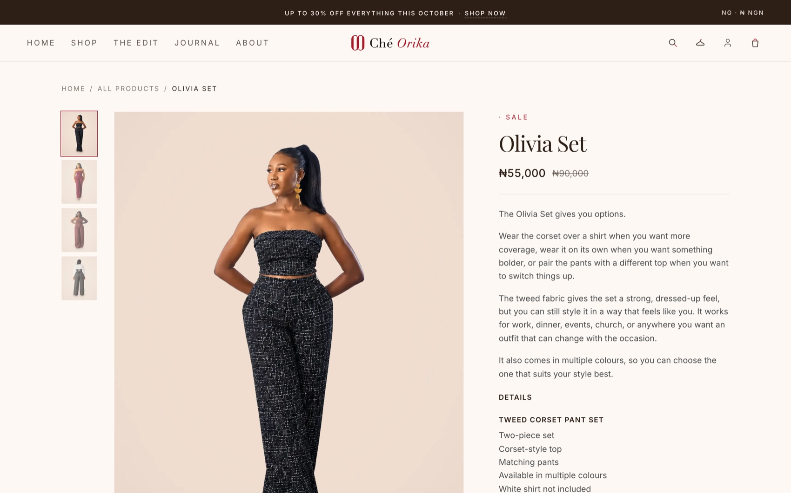

Four tools, four versions of the truth
Most small fashion brands stitch together a storefront, a spreadsheet, a POS app and a separate CRM. Each one holds part of the picture, and none of them agree. Stock sold in the boutique is still for sale online. A customer who bought on WhatsApp does not exist in the CRM. At the end of the month, nobody can say with confidence what sold, to whom, and what is left.
I wanted one system where the storefront, the boutique floor, inventory, finance and management reporting all read and write through the same governed backend. Off-the-shelf SaaS could not give me brand-level ownership of data, role-scoped access to money, or a foundation that survives the jump from one boutique to many. So I built my own, with AI as my engineering partner.
Built multi-tenant from the first commit
It launched for one brand, but I designed for many. A strict hierarchy sits underneath everything: a Tenant owns Brands, a Brand owns Stores, and Stores own inventory, orders and fulfilment. Tenant isolation was designed up front, so hosting more brands and stores needs no structural redesign.
The admin portal owns business state
The storefront, a future POS and any integration are clients of platform data. No downstream surface owns anything.
Staff and customers never meet
Staff sign in on the admin host, customers on the storefront. They never share a session, table or cookie. Better Auth handles authentication; my own role and permission model handles authorisation.
Every request is checked server-side
Authenticated user, brand, active membership and required permission are validated on the server. The URL and the frontend are never trusted.
A catalog that cannot touch live revenue
The new catalog got its own brand-scoped schema, physically separate from the legacy storefront tables, so building it could not break checkout.
Money is modelled as Decimal, keys are UUIDs, and business records soft-delete rather than hard-delete, so financial and audit history stays intact.
From a sale on the floor to the monthly review, without retyping
The commerce platform is only half of it. I also designed the sales-administration layer that lets management run the boutique: customer and sales records, order tracking, inventory controls and reporting, all connected to the same data the storefront uses.
Management dashboards and reports cover Company Goals, Boutique Sales, Marketing, Finance, and Administration & Operations, with monthly performance reviews and boutique control gates. KPI reporting tracks daily and monthly revenue, sales conversion, average transaction value, units sold, customer follow-up, clienteling, inventory accuracy, service standards and store operations, so gaps in sales execution show up as actions, not surprises.
What staff and management use every day






Click any image to view it full size.
Overselling is impossible, not unlikely
The website and the boutique till draw from one stock pool per variant. Every sale writes an immutable stock movement in the same transaction as a guarded decrement. Twelve-minute checkout reservations, CSV stock import and server-side price authority at the till.
Products as concepts, variants as what you sell
Dynamically generated variants, per-variant pricing with VAT, per-brand auto SKUs with printable barcodes, hierarchical categories, collections, signed media uploads, draft autosave and soft-delete with restore.
A workflow engine with a transition guard
Returns, refunds to store credit or exchange, notifications and a sales analytics dashboard. The guard closed a real bug where cancelling an already-shipped order would have put its stock back on the shelf.
The portal runs the shop, safely
Fourteen homepage section types, eleven store pages, scheduled drops, search with filters and SEO metadata. The CMS controls content, order and visibility, never layout, so an admin form cannot break the designed homepage.
Money paths that cannot be gamed
Server-side cart and totals recomputation, so a crafted payload cannot set its own price. Paystack payments, store credit, coupons, a wishlist, and live courier rates and booking through Shipbubble.
Four roles from a versioned permission catalog
Owner, Admin, Staff and Trainee. Tokenised single-use invitations, multi-owner support, brand switching, a full KPI dashboard for Owners and Admins and a money-free operations dashboard for Staff.


The calls that shaped the platform
Pay for the cutover while it is cheap
A code audit showed two parallel commerce systems, the original single-brand checkout and the new multi-brand catalog, both with no customers yet. I collapsed them immediately: kept the proven checkout code, dropped the throwaway data and ported the money paths onto the new catalog. Adversarial QA then had to prove brand isolation, webhook replay safety and no oversell at ten thousand variants and over a hundred thousand stock movements before release.
Harden what exists before building what does not
When the checkout sprint was scoped, a review showed about 80 percent of it already existed. I reframed it as hardening and go-live. Adversarial testing caught two critical money bugs, including store credit being lost on a failed payment. Each needed more than one fix, because the first fix left a sibling path open. Now we verify the class of bug, not the instance.
Decouple the catalog to protect live revenue
Rather than evolve legacy tables under live load, I stood up a parallel brand-scoped schema, accepting a deliberate future cutover as the price of never breaking checkout.
Re-skin through tokens, not by hand
The move to the brand's v1.0 identity started by replacing colours hard-coded across the storefront with design tokens, then re-skinning colour and type while keeping page structure intact.
Who uses it, and how
Situation: needs to know how the month is going and where sales execution is slipping.
What happens now: the KPI dashboard shows revenue, conversion, average transaction value and units sold across every channel, and the monthly review is built from the same numbers.
Situation: a customer buys a dress in store that is also listed online.
What happens now: the sale is recorded at the till against the shared stock pool, so the website cannot sell the same piece again. Staff see operations, never cost or margin.
Situation: an order comes in through a DM.
What happens now: it is logged in the portal like any online order, with its customer record, so follow-up and reporting include it.
Situation: browsing a new drop on their phone.
What happens now: filters by size, colour and stock, sees live sale pricing set in the portal, checks out with Paystack and gets live delivery rates.
In fashion, the thing you sell is the variant
Fashion breaks naive product tables. A "product" is a concept; the thing you actually sell, price, count and scan is the variant. So inventory lives on the variant, never the product. Getting that right meant per-brand unique SKUs, scannable barcodes, variant generation that stays efficient and bounded, and money modelled as Decimal to kill a rounding bug at the schema level.
The sharpest nuance was the cost and margin firewall. Pricing edits are Owner and Admin only, and Staff must never see cost or margin at all. I gated that at the read boundary, not just by hiding UI: cost and margin are stripped from payloads and the server returns a 403, fail-closed. "It is already exposed on another screen" is not an acceptable reason to leak it.
Live, selling and used daily
- Live and taking real orders since September 2026.
- Boutique, WhatsApp, Instagram and phone sales are recorded alongside online orders, so one stock count and one sales report cover all five channels. Staff use it daily.
- A product feed to Google Merchant Center has over a hundred products approved for free shopping listings, backed by structured data and an SEO sweep across the storefront.
"All green" can still be wrong
Running an AI engineering team taught me that a product manager's leverage is in the guardrails: crisp specs, decision records that capture why, and release gates. My hardest lesson was that passing checks are not proof. One sprint passed per-screen review and endpoint checks, yet a wizard was never wired to its backends. Now I verify render-deep and data-deep, walking the whole journey.
Production taught me the same lesson again. Our database hit its plan quota and the shop kept returning HTTP 200, with the header, navigation and copy all present, and zero products and zero prices. A status check would have passed it. A data-and-render regression check caught it. Since then, every release is verified on production as its own environment, by looking at real data on the real page.